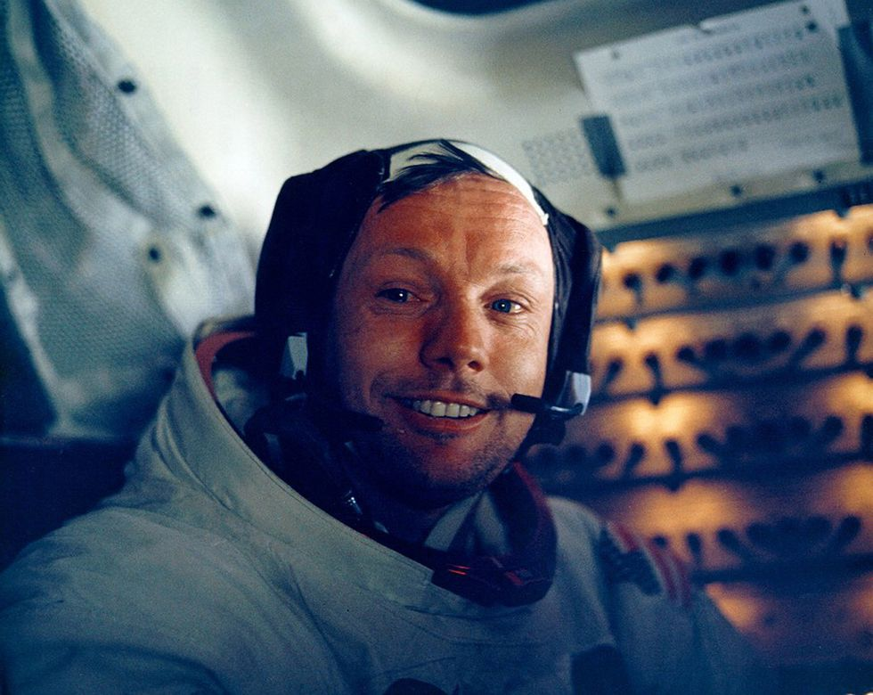

Biography
Nascut:5 August 1930.Wapakoneta,Ohio, SUA
Decedat:Decedat:25 August 2012 (în vârstă de 82 de ani) Cincinnati , Ohio, SUA
Studii: Universitatea Purdue ( BS )Universitatea din California de Sud ( MS )
Premii:Medalia Prezidenţială a Libertăţii
Medalia de Onoare a Congresului Spațial
Medalia de aur a Congresului
Medalia pentru serviciu distins al NASA
Medalia NASA pentru servicii de excepție
Medalia aeriana (3) Ocupatia anterioara: naval si pilot de testare
Rang: Locotenent (gradul junior) , USN
Timpul in spatiu: 8 zile 14 ore 12 minute si 30 secunde.
Misiunii:Gemeni 8,Apollo 11.
Decedat:Decedat:25 August 2012 (în vârstă de 82 de ani) Cincinnati , Ohio, SUA
Studii: Universitatea Purdue ( BS )Universitatea din California de Sud ( MS )
Premii:Medalia Prezidenţială a Libertăţii
Medalia de Onoare a Congresului Spațial
Medalia de aur a Congresului
Medalia pentru serviciu distins al NASA
Medalia NASA pentru servicii de excepție
Medalia aeriana (3) Ocupatia anterioara: naval si pilot de testare
Rang: Locotenent (gradul junior) , USN
Timpul in spatiu: 8 zile 14 ore 12 minute si 30 secunde.
Misiunii:Gemeni 8,Apollo 11.
Cine a fost Neil Armstrong?
Neil Armstrong s-a născut în Wapakoneta, Ohio, pe 5 august 1930.
După ce a servit în războiul din Coreea
și apoi a terminat facultatea,
s-a alăturat organizației care avea să devină NASA. Armstrong a
intrat
în programul de astronauți în 1962 și a fost pilot de comandă
pentru prima sa misiune, Gemini VIII,
în 1966.A fost comandantul
navei spațiale pentru Apollo 11 , prima misiune lunară cu echipaj,
și a devenit
primul om care a pășit pe Lună.Armstrong a murit la scurt
timp după ce a suferit o intervenție
chirurgicală pe inimă în Cincinnati,
Ohio, în 2012.
Serviciu militar
Armstrong a dezvoltat o fascinație pentru zbor la o vârstă fragedă
și și-a câștigat licența de student
pilot la vârsta de 16 ani. În 1947,
Armstrong și-a început studiile de inginerie aeronautică la
Universitatea Purdue cu o bursă a Marinei SUA.În 1949,
ca parte a bursei sale, Armstrong
s-a antrenat ca pilot în Marina.
El a început să participe activ în războiul din Coreea doi ani mai
târziu
și a continuat să zboare în 78 de misiuni de luptă în timpul
acestui conflict militar.
După ce și-a câștigat eliberarea din serviciul
activ în 1952, Armstrong s-a întors la facultate..
Alăturarea NASA
Câțiva ani mai târziu, Armstrong s-a alăturat Comitetului Național
Consultativ pentru Aeronautică (NACA),
care a devenit ulterior
Administrația Națională pentru Aeronautică și Spațiu (NASA).
Pentru această agenție
guvernamentală, el a lucrat într-o serie de
capacități diferite, inclusiv ca pilot de testare și inginer.
El a testat
multe avioane de mare viteză, inclusiv X-15, care ar putea atinge o
viteză maximă
de 4.000 de mile pe oră.
Programul astronautilor
În 1962, Armstrong a intrat în programul de astronauți NASA.
El și familia sa s-au mutat în Houston,
Texas,iar Armstrong a
servit ca pilot de comandă pentru prima sa misiune, Gemeni VIII.El
și
colegul astronaut David Scott au fost lansati pe orbita
Pământului pe 16 martie 1966. În timp ce
se aflau pe orbită,au putut
să-și andocheze pentru scurt timp capsula spațială cu vehiculul
țintă Gemini Agena. Aceasta a fost prima dată când două
vehicule s-au andocat cu succes în
spațiu. În timpul acestei manevre,
au întâmpinat însă unele probleme și au fost nevoiți să-și
reducă misiunea.Ei au aterizat în Oceanul Pacific la aproape 11
ore după începerea misiunii și au
fost ulterior salvați de USS Mason.
Aselenizare
Armstrong s-a confruntat cu o provocare și mai mare în 1969.
Împreună cu Michael Collins și Edwin E. „Buzz”
Aldrin,a făcut
parte din prima misiune cu echipaj uman a NASA pe Lună.
Trio-ul a fost lansat în spațiu
pe 16 iulie 1969.Servind ca
comandant al misiunii, Armstrong a pilotat Modulul Lunar la
suprafața Lunii pe
20 iulie 1969, cu Aldrin la bord. Collins a
rămas pe modulul de comandă.
La 22:56, Armstrong a ieșit din
Modulul Lunar.El a spus:
„Acesta este un pas mic pentru om,un salt uriaș pentru omenire."

Neil Armstrong în interiorul Modulului Lunar pe 20 iulie 1969.
In timp ce a făcut celebrul său prim pas pe Lună. Timp de
aproximativ două
ore și jumătate,Armstrong și Aldrin au
colectat probe și au efectuat experimente.Au făcut și
fotografii, inclusiv propriile lor urme.
Întorcându-se pe 24 iulie 1969, nava Apollo 11 a coborât in
Oceanul Pacific la vest de Hawaii. Echipajul și
ambarcațiunea
au fost preluate de USS Hornet , iar cei trei astronauți au fost
puși în carantină timp de
trei săptămâni.În scurt timp, cei trei
astronauți de la Apollo 11 au primit o primire călduroasă acasă.
Mulțimile s-au aliniat pe străzile orașului New York pentru a-i
încuraja pe celebrii eroi care au fost
onorați într-o paradă cu
bandă. Armstrong a primit numeroase premii pentru eforturile
sale,inclusiv
Medalia Libertății și Medalia de Onoare a
Congresului Spațial.
Contribuții ulterioare

Armstrong a rămas la NASA, servind ca administrator asociat
adjunct pentru aeronautică până în 1971.
După ce a părăsit
NASA, s-a alăturat facultății de la Universitatea din Cincinnati
ca profesor de inginerie
aerospațială. Armstrong a rămas la
universitate timp de opt ani. Rămânând activ în domeniul său,
a ocupat
funcția de președinte al Computing Technologies for
Aviation,Inc., din 1982 până în 1992.
Ajutând într-un moment dificil,
Armstrong a ocupat funcția de vicepreședinte al Comisiei
prezidențiale pentru
accidentul navetei spațiale Challenger în
1986. Comisia a investigat explozia Challenger din 28 ianuarie
1986,
care a luat viața echipajului său, inclusiv a profesoarei
Christa . McAuliffe.
În ciuda faptului că a fost unul dintre cei
mai faimoși astronauți din istorie, Armstrong s-a ferit în
mare
măsură de ochii publicului. Într-un interviu rar pentru programul
de știri 60 Minutes din 2005,el a
descris luna intervievatorului
Ed Bradley: „Este o suprafață strălucitoare în lumina aceea.
Orizontul ți
se pare destul de aproape pentru că curbura este
mult mai pronunțată decât aici pe pământ. Este un loc
interesant de a fi. Îl recomand." Chiar și în ultimii săi ani,
Armstrong a rămas dedicat explorării
spațiului.Astronautul
timid pentru presa a revenit în centrul atenției în 2010 pentru
a-și exprima
îngrijorarea cu privire la modificările aduse
programului spațial al SUA. El a depus mărturie în Congres
împotriva deciziei președintelui Barack Obama de a anula
programul Constellation, care a inclus o altă misiune
pe Lună.
Obama a încercat, de asemenea, să încurajeze companiile
private să se implice în afacerile de
călătorii în spațiu și să
avanseze cu mai multe misiuni spațiale fără pilot.
Luarea acestei noi decizii, a spus Armstrong, ar costa Statele Unite
poziția de lider în explorarea spațiului.
„America este respectată
pentru contribuțiile pe care le-a adus în învățarea să navigheze
pe acest nou ocean.
Dacă conducerea pe care am dobândit-o
prin investiția noastră este lăsată pur și simplu să dispară, alte
națiuni vor interveni cu siguranță acolo unde ne-am zdruncinat.
Nu cred asta ar fi în interesul nostru”,
a spus el pentru Congres.
Cartea și filmul „Primul om”
Biografia autorizată a iconicului astronaut, First Man:Life of Neil A.Armstrong , a fost
publicată în 2005. A fost scrisă de James
R. Hansen, care a susținut interviuri cu Armstrong, precum și
cu familia,prietenii și asociații săi.
Cartea a fost adaptată mai
târziu pentru un biopic,First Man a apărut în cinematografeîn 2018.
Regizat de Damien
Chazelle,filmul l-a jucat pe Ryan Gosling
în rolul lui Armstrong, cu Claire Foy, Jason Clarke și Kyle Chandler
în roluri secundare.
Viata Personala
Armstrong s-a căsătorit cu Janet Shearon pe 28 ianuarie 1956.
Cuplul s-a adăugat curând la familia lor.
Fiul Eric a sosit în 1957,
urmat de fiica Karen în 1959. Din păcate,Karen a murit din cauza
complicațiilor
legate de o tumoare cerebrală inoperabilă în ianuarie
1962. În anul următor, familia Armstrong și-a întâmpinat
al treilea
copil, fiul Mark.
După divorțul său de Janet în 1994, Armstrong
s-a căsătorit cu a doua sa soție, Carol Held Knight
Moartea si controverse
Armstrong a suferit o operație de bypass cardiac la un spital din
Cincinnati,Ohio, în august 2012.
Două săptămâni mai târziu,pe
25 august 2012, Armstrong, în vârstă de 82 de ani,a murit din
cauza complicațiilor
operației.La scurt timp după moartea sa,
familia sa a lansat o declarație: „Pentru cei care ar putea
întreba
ce pot face pentru a-l onora pe Neil, avem o cerere
simplă."Onorați-i exemplul de slujire, realizare și
modestie, iar
data viitoare când veți ieși afară într-un noapte senină și vezi
luna zâmbindu-ți,gândește-te
la Neil Armstrong și fă-i cu ochiul.”
Vestea morții lui Armstrong s-a răspândit rapid în întreaga lume.
Președintele Obama s-a numărat printre cei care i-au oferit
tributuri regretatului pionier spațial,
declarând:„Neil a fost printre
cei mai mari eroi americani – nu doar ai timpului său, ci și a
tuturor timpurilor”.Aldrin a adăugat:
„Știu că mi se alătură milioane de alți oameni în doliu pentru
moartea unui adevărat erou
american și a celui mai bun pilot
pe care l-am cunoscut vreodată. Prietenul meu Neil a făcut
pasul mic,dar
uriaș, care a schimbat lumea și va fi amintit
pentru totdeauna ca un moment marcant în istoria omenirii”.
În iulie 2019, la scurt timp după sărbătorile de marcare a
celei de-a 50-a aniversări de la aterizarea pe
Lună, The New
York Times a raportat despre o controversă necunoscută
anterior cu privire la moartea
astronautului. Potrivit The
Times,după ce Armstrong a intrat la Mercy Health - Spitalul
Fairfield cu
simptome de boală de inimă în august 2012,
medicii au luat o decizie îndoielnică de a efectua imediat o
operație de bypass.După aceea, când îndepărtarea firelor
temporare pentru un stimulator cardiac a dus la
sângerare
internă,a fost făcută o altă mișcare discutabilă pentru a aduce
Armstrong la un laborator de
cateterism în loc să fie direct într-o
sală de operație. Spitalul a ajuns în cele din urmă la un acord de
6 milioane de dolari cu familia supraviețuitoare a lui Armstrong,
cu prevederea că detaliile despre
îngrijirea medicală și așezarea
rămân private.